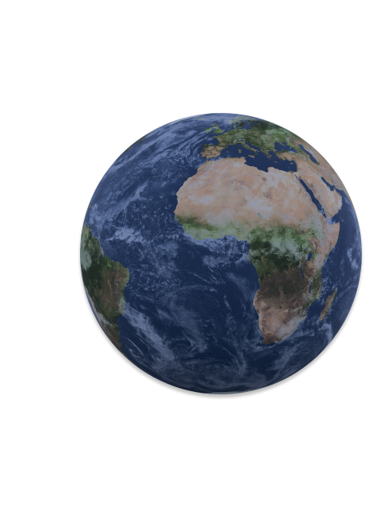

The main characteristics of the Earth Diameter: 12,742 km Weight: 5.97 x 10^24 kg Density: 5.52 g/cm^3 Sidereal day: 23 h 56 min 4.1 sec Sidereal year: 365.25636 days Atmosphere: 78% nitrogen, 21% oxygen, 1% argon and other gases Average temperature: 15°C (59°F) Rotation speed at the equator: about 1,670 km/h Gravity: 9.8 m/s^2
